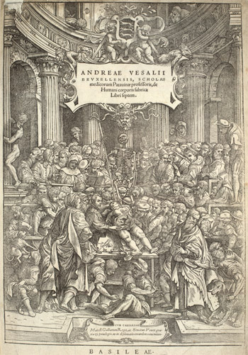
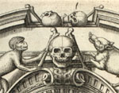

| Introduction
The purpose of Ars Anatomica
is to signal the existence of, and to encourage research on, some of the most important books
on human anatomy in the collections of Edinburgh University Library (EUL) and the library of the
Royal College of Physicians of Edinburgh (RCPE). These books, as well as often being in
themselves beautiful objects, were fundamental instruments for the international communication of
knowledge about anatomy.
This web site concentrates on the visual aspects of this process of information transfer,
which has allowed us to make maximum use of the impressive capabilities of high
resolution digital imaging.
Vesalius's De humani
corporis fabrica libri septem, printed in 1543, in Basel, by Johannes Oporinus
was chosen as the central work. The diffusion of its illustrations in
sixteenth-century Europe, both directly and indirectly, is the subject
of this online presentation.

Woodcut title page to the Fabrica 1543. © Edinburgh University Library
[Left click for a larger image]
The major editions that
have been imaged, catalogued and discussed here are:
Vesalius, Andreas. De humani corporis fabrica libri septem (Basel: Johannes Oporinus, 1543) (EUL: Df.1.52).
Vesalius, Andreas. De humani corporis fabrica libri septem (Venice: Francesco dei Franceschi, 1568) (RCPE: TL-E 10.27)
Vesalius, Andreas. Tabulae Anatomicae sex (Venice: B. Vitalis, 1538)
(Glasgow University Library: Sp Coll Hunterian Az.1.10)
Geminus, Thomas. Compendiosa totius anatomie delineatio (London: John Hertford, 1545) (RCPE: STR-SS 2.6)
Geminus, Thomas. Compendiosa totius anatomie delineatio (London: Nicholas Hill and Thomas Geminus, 1552) (EUL: Dh.8.17)
Geminus, Thomas. Anatomes totius, aere insculpta delineatio, cui addita est epitome
(Paris: André Wechel, 1564) (RCPE: STR-SS 2.18)
Valverde, Joannis. Anatomia del corpo humano (Rome: Ant. Salamanca et Antonio Lafreri, 1559) (EUL: JY60/2)
Valverde, Joannis. Anatome corporis humani ... Nunc primum a Michaele Columbo latine reddita,
et additis nouis aliquot tabulis exornata (Venice: Giunti, 1589) (RCPE: STR-SS 3.6)
Images from the following editions are also included in the Insight image gallery,
but are not discussed in detail:
Vesalius, Andreas. De humani corporis fabrica libri septem (Basel: Johannes Oporinus, 1555) (EUL: JY406).
Vesalius, Andreas. Epitome anatomica, Opus redivivum; cui accessere notae ac commentaria P. Paaw
(Leiden: Justus a Colster, 1616) (RCPE: B11-BH.2.14)
Vesalius, Andreas. De Humani Corporis Fabrica Epitome, cum Annotationibus Nicolai Fontani (Amsterdam: Johannes Jansson, 1642) (RCPE: STR-SS 2.5)
Enter Image Gallery
in LUNA®

©2004 Edinburgh University Library / Royal College of Physicians of Edinburgh
All rights reserved
www.lib.ed.ac.uk
21 August 2007 |


{kind=link}